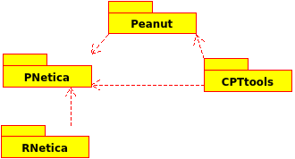

This website plays host to four different packages of functions useful for building Bayesian networks: RNetica, CPTtools, PNetica and Peanut.
RNetica and CPTtools are beta-quality releases and Peanut and PNetica are both in early alpha stages. There may be bugs and problmes and users should be comfortable debugging in R. Although I am happy to accept bug reports, I do not promise to respond to them in a timely fashion. 
Note that CPTtools is meant to be independent of the Bayes net implementation and Peanut, the object oriented later on top of it, depends on CPTtools but not the implementation specific packages. RNetica depends on the Netica Bayes net engine and PNetica is the Peanut implementation using RNetica.
RNetica is best thought of as a "glue" layer between the open source statistical programming language R http://www.r-project.org/ and the proprietary Bayesian network engine Netica ® http://www.norsys.com/. Doing non-trivial work with RNetica requries the purchase of a Netica API license from Norsys.
RNetica is now distributed in both source and object forms. Note that because RNetica uses c code, it requires knowledge of how to compile R packages. Instructions can be found at CRAN.
Click here for information about RNetica.
Conditional Probability Table (CPT) Tools is a package of R functions for constructing and manipulating conditional probability tables: one fo the basic building blocks of Bayesian networks. The tools were originally designed to work with StatShop (an internal Bayesian network program developed at ETS), but they are general enough to work with other Bayes net packages as well. The versions here are compatable with RNetica.
It also contains tools for displaying and analyzing the output of Bayesian network analyses. Again, the tools were originally designed to work with the output of StatShop, but work equally well with RNetica output. Again, they should work with the output of other Bayes net packages with minimal adaptation.
CPTtools is beta release; however, the code is all in R, and hence does not require advanced knowledge of R.
Click here for information about CPTtools.
Peanut is an object oriented layer on top of CPTtools, for associating choices of parameters and parameterizations with specific parameterized nodes (Pnodes) in a parameterized network (Pnet). Peanut is mostly a generic interface, and PNetica is a specific implemenation of the Peanut framework using RNetica.
Peanut and PNetica are in early beta release; however, the code is all in R, and hence does not require advanced knowledge of R.
Click here for information about Peanut and PNetica.